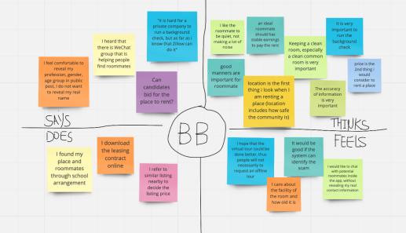

RooMate
Meet Your Next Roommate
On RooMate
What is RooMate?
RooMate app is aiming to help people, especially millennials living in cities, find ideal roommates, no matter when they are renting out their spare room or are looking for a place.


Design Roles
UX Research
UX Design
Information Architecture
Visual Design
Brand & Identity
Deliverables
User Surveys
Competitive Analysis
Interviews
Personas
User Story
User Flow
Wireframe
Usability Testing
Branding
Hi-Fi Mockup
Prototype
Tools
Figma
Google Forms
SWOT Analysis
Miro
Asana
Whimsical
Maze
Challenge
There are a few trends of note: 54% of the world’s population live in urban communities, the average marriage age for men is 29 (up from 26 two decades ago) and for women is 27 (up from 23 in the same time period). Given these trends, city dwellers tend to spend most of their twenties living with roommates. Finding and keeping a good roommate, however, gets harder as more and more people live in cities.
Solution
RooMate is a roommate-seeker app, which helps people find, match, and communicate with future roommates. People can either post on RooMate or search others’ posts to find the ideal roommate. At the same, RooMate is also matching roommates basing on people’s preference automatically. The goal is to streamline the roommate matching process and make it easier, faster and more fun.

Discovery
User Survey
User survey is conducted as the first step in User Research. Surveys are sent out via Google Forms. Keys questions are listed as below:
How people find roommates?
What apps or software do they use?
What factors do they consider when looking for roommates?
What make an ideal roommate to people?
What information do they want to reveal to public?
Here are some key insights from survey:
-
91% have experience living with roommate
-
60% find roommates via family or friends
-
0% used roommate-finder app
-
75% are concerned with alcohol issue of roommate
-
Top 3 factors when people looking for a place are: price, location and quality of room
-
Top 4 factors that people will consider when choosing roommates are: personality, similar lifestyle, age and gender
User Interview
Interviews are conducted to help me have a better understanding of the survey results as well as develop empathy for users. I selected people who can represent different groups which are identified in the surveys. The following empathy map shows how one of the interviewees, BB, thinks, feels, says and does.
Personas
User surveys and interviews above provide a good basis for creating the user personas. There are 3 distinct groups of people identified in user research thus 3 personas are created here: Mike Josh, Chris Chung and Dan Ivanov.

Mike Josh
Age: 33
Profession: Audit Manager
Region: Seattle
Bio
Mike is an Audit Manager working in Seattle. He currently is renting a 2-bedroom apartment, and look for another roommate to share the rent. Mike travels a lot due to the job and sometimes he will be on business trip for 3 weeks a month.
Motivation
Mike wants to share the rent with roommate to decrease the financial pressure. He is looking for a website or app that can match him with a perfect roommate in an easy way.
Frustration
1. Difficult to find a good roommate
2, Hard to know more details of the potential roommate, e.g. their lifestyle
3, Trust issue
4, The rent is expensive
5, Look for a roommate who does not mind if he travels a lot

Chris Chung
Age: 24
Profession: Student
Region: New York
Bio
Chris Chung is a student in New York University who will graduate this summer. She is currently living in dorm provided by university but she needs to move out and find another place after she graduated. Since the rent in NY is pretty expensive, Chris decides to find a roommate to share the rent.
Motivation
Chris is looking for a place that is cost-bearable, with convenient transporation options, e.g. close to subway station, bus stop, and living friendly, e.g. close to grocery stores. She is looking for a roommate around her age with similar education background.
Frustration
1. Expensive to rent place in New York City, especially in Manhattan
2, Does not like roommate who has alcohol or drug issue
3, Allergic to dogs
4, Look for a roommate who does not mind if she parties a lot

Dan Brown
Age: 31
Profession: Software Engineer
Region: Mountain View
Bio
Dan Brown is living in Mountain View and working at Google as a software engineer. He bought a townhouse near Google campus, and looking for 2 roommates who can rent his spare room. He has a cute dog living with him.
Motivation
Dan prefers the roommates working in tech, especially working at Google, thus he can have more topics with roommates. He likes to play video games in his spare time, so he is looking for roommates who also likes video games.
Frustration
1. Look for roommates who do not mind dog entering their room accidentally
2, Does not like roommate who has alcohol or drug issue
3, Allergic to cat
4, Require background check